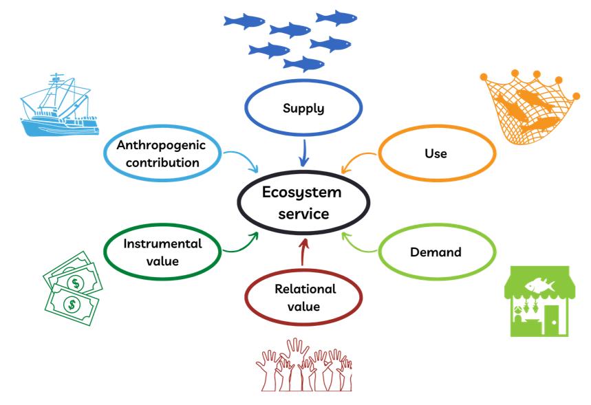

Ecosystem services
Presentation
Ecosystem services assessments rely on a range of methods and frameworks that can be used and adapted in the case of the Hudson Bay Lowlands. We discuss the two frameworks (SEEA and EEBVs) recommended by the United Nations Convention on Biological Diversity’s (UN CBD) Global Biodiversity Framework (UN CBD, 2022) and the work done by the European Union’s assessment of ecosystems and their services.
UN CBD Global Biodiversity Framework
The most popular and widely tested framework, the United Nation’s System of Environmental Economic Accounting (SEEA), was designed to support national statistics offices include the value of ecosystems into economic reporting (SEEA, 2021). The goal of this framework is to account for the value of ecosystems in economic policy making in support of the UN Sustainable Development Goals. The UN CBD recommends that all signatory parties report on their progress towards the Global Biodiversity Framework following the guidelines of outlined in the SEEA white paper (UN CBD, 2022). This framework relies on decades of work done by experts around the world and has been tested in a wide variety of regions from Europe to Asia, Africa and South America (Hein et al., 2020; NSO India, 2021;IBGE, 2021; S.A.N.B.I., in print). An increasing number of countries is adopting this framework, including the US and Canada. The SEEA framework requires the production of five “accounts” (Figure 1).

Figure 1. Ecosystem accounts in the UN SEEA framework and how they relate to each other. The framework requires estimating these accounts in space over a landscape to convert their ecological reality into a monetary valuation for policy. Figure from SEEA 2021.
An ecosystem extent account records the total land coverage of each type of ecosystem. A condition account then specifies in which state the ecosystem is, which is linked to its capacity to provide services. Two ecosystem services accounts (one in physical units and one in monetary terms) record the supply of services by the ecosystem and the use by people. Finally, a monetary ecosystem asset account holds the information on all the stocks of services and their change. Other thematic accounts, such as biodiversity or wetland accounts, can also be produced.
This framework provides clear guidelines on what accounts should contain, what specific terminology means and how to relate these accounts to each other. It was developed with input from a wide variety of scientific disciplines and aims to respect the ecological reality of the landscape first and then translate it into economic terms.
Methodologies on how to measure and create accounts is flexible and can be site specific, many countries have produced accounts relying on modelling tools such as the Integrated Valuation of Ecosystem Services and Tradeoffs (InVEST; Sharp et al., 2020) or the ARtificial Intelligence for Ecosystem Services (ARIES; Martinez-Lopez et al., 2019). However, the SEEA framework was designed with a specific goal in mind: measuring the monetary contribution of ecosystems to societal wellbeing, and therefore may not be sufficient to include diverse priorities and ways of knowing.
The Group on Earth Observations Global Biodiversity Network (GEO BON) recently proposed the Essential Ecosystem Services Variables (EESV) framework (Balvanera et al., 2022) following its successful development of essential biodiversity variables, currently implemented worldwide to monitor biodiversity (Pereira et al., 2013). The UN CBD also endorsed the EESV framework as means to support monitoring of ecosystem services and reporting to the Global Biodiversity Framework (UN CBD, 2022c). The EESV framework was designed to streamline and standardise the collection of data on ecosystem services. It proposes to focus on six classes of data to collect for any ecosystem service of interest (Figure 2).

Figure 2. Illustration of the Essential Ecosystem Services Variables framework. All six classes are highlighted in a distinct colour and exemplified with icons relevant to a fishery as an example of an ecosystem service. The abundance of fish is a measure of supply. The catch is a measure of use. The consumption of fish by people is a measure of demand. The cultural significance of the fishery is a measure of relational value. The monetary value of fish sales is a measure of instrumental value. The size of the fishing fleet is a measure of anthropogenic contribution. Monitoring these variables together makes understanding the changing state of an ecosystem service possible.
These six classes aim to holistically capture the complexity of an ecosystem service and understand how it may be changing in several dimensions. They also make reporting on the changing state of an ecosystem service feasible and policy relevant. These classes are ecological supply: the ecosystem structure and functions that influence its potential to deliver ecosystem services, use: the actualised appropriation of a service by humans, demand: the implicit of explicit desire for a service, anthropogenic contribution: the investments human make to increase ecological supply or use, instrumental value: the benefits obtained from a service and relational value: which seeks to include values held by a diverse group of stakeholders and their unique worldviews. This framework is relatively new and only one paper to date, written by our group, has attempted to implement the approach in a real system (Schwantes & Firkowski et al., in review). However, it is more flexible and holistic than the SEEA and designed to be useful for any purpose, including but not limited to accounting.
European Union’s assessment of ecosystems and their services

Figure 3. The conceptual framework for EU and national assessments of the EU Biodiversity Strategy (from Maes et al., 2016).